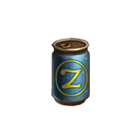
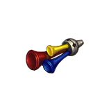
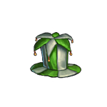
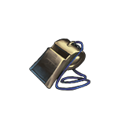

Получено: файл; исходный URL. Иллюстрация «Футбольная коллекция» из каталога ViveR_9, сопоставлена по точному названию; возможны отличия версий. Оригинальный файл без перекодирования; авторство отдельно не установлено. Страница: источник.

Футбольная коллекция
Браузерная социальная версия; историческая статья; дата редакции неизвестна- Тип
- Коллекции
- Версия и дата
- Браузерная социальная версия; историческая статья; дата редакции неизвестна
Элементы коллекции












Данные по источнику · Браузерная социальная версия · историческая статья; дата редакции неизвестна
Предварительно: один материал, требуется сверка. Требуется сверка.
- Состав (источник Zombie-island)
- Напиток; Флаг; Дудка; Шапка болельщика; Свисток.
- Награда (источник Zombie-island)
- 1 Батарейка; 200 Опыт.
- Где копать Футбольную коллекцию в Зомби Ферме лопатами
- Элитный букет; Флаг Милана; Серебрянная бутса.
- Футбольную коллекцию можно выиграть в рулетке
- Адмирал.
- Футбольная коллекция есть в сокровищах и ценностях
- Глазной яблони; Шапка фаната; Коллекционер 2; Осенний презент с гранатом; Сундук Чудовища 3; Сюрприз бригады; Богатырский презент; Осенний презент 3; Смелый презент; Золотая бутса.
- Футбольную коллекцию можно найти при колдовании Палочками
- Палочка-выручалочка.
- Страница сайта Футбольная коллекция
- Описание:.
Данные по источнику · браузерная версия; платформа в ответе не уточнена · Дата на странице (формат не уточнён): 06/03/2015
Предварительно: Ответ справочного сайта; достоверность и независимость от других фанатских источников не установлены. Возможны различия редакций и версии.. Требуется сверка.
- Ответ источника
- Футбольная коллекция в Зомби Ферме может быть выкопана только с помощью лопат в таких местах: флаг Милана, Марафонец, флаг Марафонца. Также ее можно выиграть в рулетке адмирал или после разбития яйца «Сюрприз бригады». Некоторые элементы футбольной коллекции могут быть найдены в сундуке глазной яблони или в ценной шапке фаната. Сама коллекция состоит из 5 элементов: напитка, дудки, свистка, флага, шапке болельщика. После того как будет собрана вся футбольная коллекция, ее можно обменять на батарейку и 200 баллов опыта.
Данные по источнику · браузерная версия; платформа не указана · дата редакции не установлена
Предварительно: Содержимое списка: изображения и колонки могут терять смысл при извлечении текста; отдельная страница и дата не проверены. Подписи alt иногда ошибочны.. Требуется сверка.
- Текст карточки из каталога
- 200 опыта и Батарейка Напиток Флаг Дудка Шляпа Болельщика Свисток Как получить: Напиток можно получить, если копать у друзей под флагом Милана, Флаг Марафонца Марафонец
Данные по источнику · браузерная версия; на сайте указана игра ВКонтакте · дата редакции не установлена
Предварительно: Исторический текст; сильно совпадает со справкой Zommbie.at.ua, независимость не доказана. Отрицания и доступность могут измениться с патчем.. Требуется сверка.
- Где искать по странице «Зомбастики»
- Под флагом Милана; дарят друзья в сувенирной лавке.
Данные по источнику · историческая браузерная игра; площадка не уточнена · 25.02.2013 — дата каталога; редакция неизвестна
Предварительно: Проверен текст в каталоге сайта; вероятность выпадения не указана. Исторические версии и даты могут различаться; списки и награды требуют сверки, независимость сайта от других справочников не установлена.. Требуется сверка.
- Награда в источнике
- 200 опыта и батарейка
- Места в источнике
- Флаг Милана, флаг Марафонца и Марафонец.
Связанные сущности
нет проверенных связей — требуется сверка.
Источники
- прочитано: Zombie-island.moy.su; проверка 2026-11-21
- FatalGame: прочитан отдельный ответ; дата на странице 06/03/2015
- ZOMBIA: прочитана карточка в списке
- Ссылка на отдельную страницу; отдельно не проверена
- Зомбастики: прочитана соответствующая строка; возможная копия другого справочника
- ViveR_9: изображение в каталоге коллекций; совпадение названия
- zombi-ferma.ucoz.net: каталог коллекций